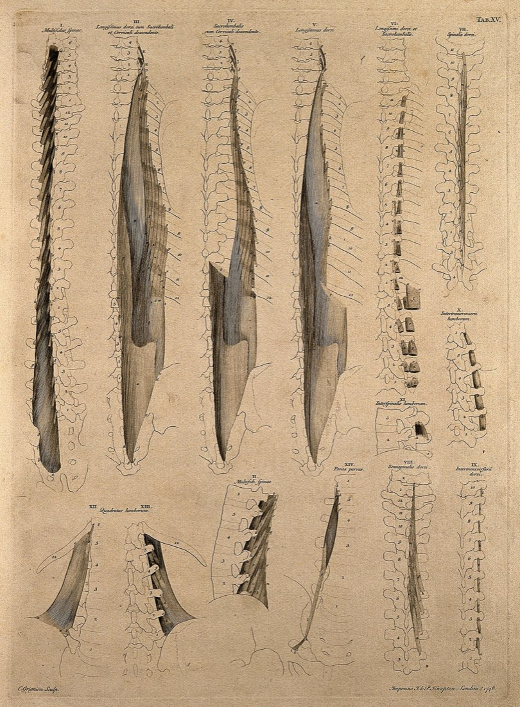
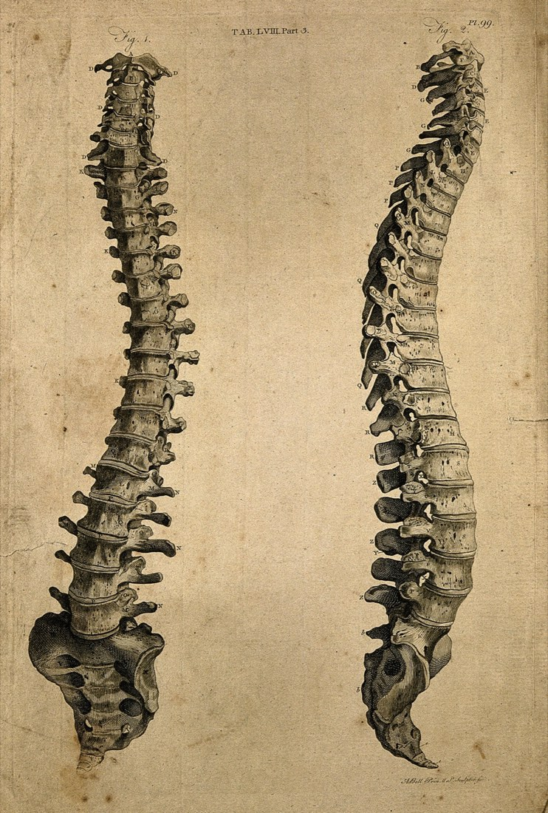
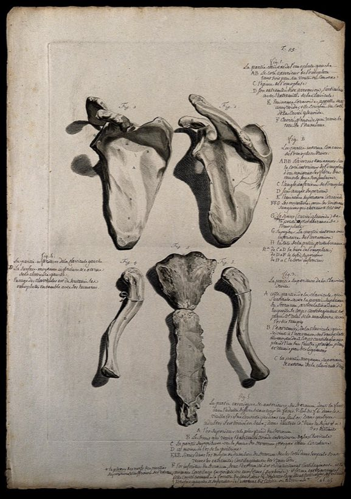
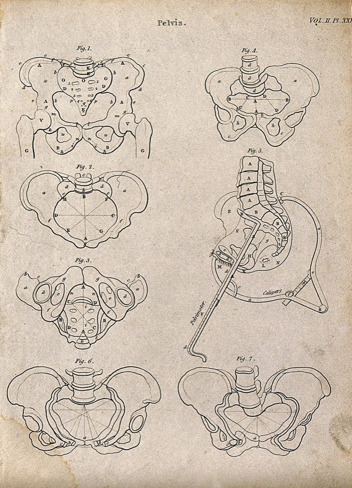

Osteopatik manuel terapi

- Omurga ve eklemlerde ağrı ve hareket kısıtlılığı
- Eklem mobilizasyonu, yumuşak doku ve germe teknikleri
- Egzersiz programıyla birlikte planlanır
- Uygulama öncesi bilgilendirilmiş onam alınır

Bitez'de üç fizyoterapistin görev yaptığı sağlık meslek hizmet birimi. Her program, hekiminizin tanısı ve yönlendirmesiyle başlar.
Omurgaya dokunun, kamera o bölgeye insin.
Bodrum Bitez'de, farklı fizyoterapi alanlarında mesleki bilgi ve deneyime sahip fizyoterapistlerin görev yaptığı özel sağlık meslek hizmet birimidir.
Osteopatik manuel terapi, 3D Schroth terapi, pelvik taban rehabilitasyonu, klinik pilates ve kas-iskelet sistemi rehabilitasyonu gibi alanlarda uygulamalar yürütülür.
Değerlendirme ve uygulama süreçleri; ihtiyaçlarınız, mevcut fonksiyonel durumunuz ve hekim yönlendirmesi doğrultusunda planlanır.
Süreç üç aşamada ilerler. Programın amacı, süresi ve seans sıklığı ilk aşamada size anlatılır.
Hekim raporu ve görüntülemelerilk görüşme
Şikâyet öyküsüilk görüşme
Eklem hareketi, kas kuvveti, duruşölçüm
Kişiye özgü tedavi ve egzersizplanlama
Amaç, süre ve seans sıklığısize anlatılır
Yanıtınız izlenir, program güncellenirher seans
Egzersizler kademeli ilerletilirgelişime göre
Yanınızda getirinrapor · MR/röntgen · ilaç listesi



Birimde üç fizyoterapist görev yapar. Değerlendirmeden takibe kadar programınızı aynı ekip yürütür.
Hekim raporu gerekli mi? Uygulamalar, hekimin koyduğu tanı ve yönlendirme doğrultusunda planlanır. Raporunuz varsa ilk görüşmeye getirin.
İlk görüşmeye ne getirmeliyim? Hekim raporunuz, varsa röntgen veya MR sonuçlarınız ve düzenli kullandığınız ilaçların listesi.
İlk görüşmede ne yapılır? Öykünüz ve sonuçlarınız gözden geçirilir; eklem hareket açıklığı, kas kuvveti, duruş ve günlük yaşamdaki kısıtlılıklar değerlendirilir.
Kaç seans gerekir? Değerlendirme sonucuna göre belirlenir. Programın amacı, süresi ve seans sıklığı size baştan anlatılır.
Reformer seansları kalabalık mı? Hayır. Seanslar bireysel ya da en fazla iki kişilik planlanır.
Ne zaman açıksınız? Pazartesi–Cuma 09.00–19.00. Cumartesi ve pazar kapalı.
Ücret bilgisi alabilir miyim? Telefonla ya da WhatsApp'tan sorabilirsiniz; program değerlendirme sonrasında belli olur.
Sitedeki bilgiler tedavi yerine geçer mi? Hayır. İçerikler genel bilgilendirme amaçlıdır; sağlık kararlarınız için hekiminize danışın.
Güneri İş Merkezi, No: 6/2
Kavaklı Sarnıç Caddesi, Bitez
48400 Bodrum / Muğla